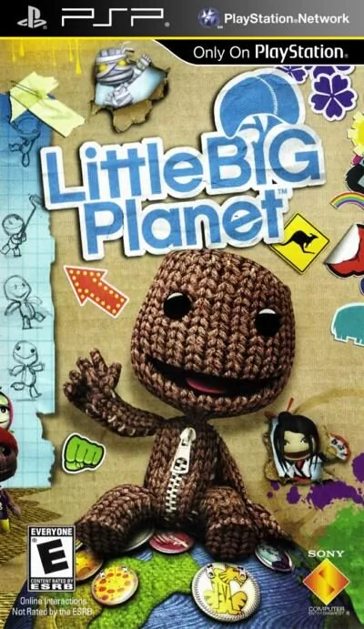

PSP
LittleBigPlanet
- Año: 2009
- Desarrollador: SCE Studio Cambridge
- Género: Plataformas
- Jugadores: 1 jugador
LittleBigPlanet (en español PequeñoGranPlaneta), es un videojuego de plataformas y de lógica cuyos escenarios son generados por los propios usuarios.
El juego gira en torno del control de pequeños avatares tipo muñeco llamados sackboy o sackgirl —debido a su apariencia—, a lo largo de varios escenarios de plataforma. A pesar de que el juego presenta una serie de niveles prediseñados para la exploración por parte del jugador, de igual importancia es la naturaleza del juego personalizable, de alterar el personaje del jugador y el espacio personal para construir totalmente nuevos objetos y niveles para luego compartir y jugarlos en línea como parte de la comunidad LittleBigPlanet.
JUGABILIDAD -----------
En LittleBigPlanet, los jugadores controlarán pequeños personajes apodados sackboy, dependiendo de su material y apariencia. Cada uno puede correr y saltar, así como colgarse, arrastrar y empujar objetos. Los jugadores usan estas habilidades de diferentes formas: para jugar y explorar los ambientes del juego, en los que predominan las acciones de los juegos de plataforma como saltar, empujar, agarrarse y correr. El juego hace uso de un poderoso motor físico9 para crear su propio contenido, como por ejemplo ubicar etiquetas adhesivas en los niveles, así mismo se puede utilizar el editor de niveles para crear, destruir, editar y manipular niveles9 para finalmente compartir dichas creaciones con la comunidad en línea para después jugar con los niveles creados por el propio usuario con otros. Estas tres acciones son descritas por el eslogan del título: Jugar. Crear. Compartir.9
Los jugadores comienzan dentro de su propio pod, un espacio personal desde el pueden acceder a los tres modos del juego, y decorar el cuarto con etiquetas adhesivas y decoraciones Inicialmente, sólo el modo de juego está activado, a partir del cual el jugador toma algunos tutoriales, narrados por Stephen Fry;10 y cuando lo básico está dominado, el jugador es libre de seguir desempeñando cualquier parte del juego.
JUGAR
La sección Jugar de LittleBigPlanet consiste de un número de niveles, creados por Media Molecule, y se basan en torno a distintos temas que se inspiran en lugares del mundo real, como los jardines japoneses, desiertos secos, calles de la ciudad de Nueva York y estepas de hielo de Rusia.11 Al completar los niveles que tienen a su disposición, el jugador podrá entonces avanzar la historia y jugar más niveles desbloqueados.12 El modo historia se compone de ocho áreas temáticas, cada una comprende tres o cuatro niveles y cada nivel contiene llaves coleccionables para desbloquear mini-niveles de bonus;13 por lo tanto, el modo historia comprende 51 niveles prediseñados en total.13
Para controlar su personaje Sackboy, los jugadores los mueven usando las palancas análogas, saltar con una variedad de grados de altura, dependiendo de la presión aplicada al botón, y agarrarse de objetos para moverse o balancearse sobre ellos.12 Además del movimiento regular izquierdo-y-derecho, y a pesar de la mirada 2D del juego, los niveles consisten en tres niveles de profundidad - el primer plano, el medio y el fondo - y éstos pueden ser atravesados entre sí automáticamente por el mismo juego, o por orden del jugador.9
Los jugadores también pueden optar para manifestar emociones en su Sackboy, aplicando varios grados de placer, miedo, tristeza, y enojo.14 controlar cada brazo de manera independiente con los controles análogos,14 cachetear a los otros jugadores , y usar la funcionalidad sensora de movimiento Sixaxis para animar la cabeza y cuerpo del personaje.
MODOS EXTRAS
Los modos extra (modo mi Luna y modo satélite) sirven para crear niveles y publicarlos, en el modo Mi Luna, o, para visitar Internet, en el modo satélite). en la parte descargable gratis el modo online no está disponible solo el modo historia.
Controles
que Sackboy se mueva con el joystick. Según las reseñas: B (✕) salta (mantener: más alto), R agarra (mantener: colgarse, tirar de palancas y mover cosas), Y (□) abre el menú Popit, A (○) cancela y L deja fija una expresión de la cara; joystick arriba o abajo, cambiar de plano. ¿Va fluido?
Mando de PSP. El joystick mueve la cruceta y también la palanca analógica, porque muchos juegos de PSP solo se mueven con ella.
| Panel | Juego |
|---|---|
 | ✕ |
 | ○ |
 | R |
 | □ |
 | △ |
 | L |
 | Start |
 | Select |
+  | Salir del juego |
El panel en PSP


Argumento
Recopilado de internet (2026-11-04). Lo marcado con ⚠️ no está probado en la bartop.
Continúa la historia del primer LittleBigPlanet de PS3. Sackboy se va de vacaciones a dar la vuelta al mundo. Empieza en Down Under (Australia), donde Bruce le ayuda a empezar, y en la Cueva de los Sueños el Místico le cuenta que va a haber un gran carnaval en Brasil: tiene que recorrer el mundo para convencer a los «creadores» de cada lugar de que vayan.
En el Oriente (China) devuelve al dragón el huevo que guardaba el Emperador; en el Bazar (Persia) recupera la lámpara del Genio, robada por el rey de los monos ladrones; en Golden Sands (Arabia) prueba la seguridad del parque de atracciones de un príncipe; en los Alpes busca a los hijos perdidos de Clock Hans; y en Tinsel Town (Hollywood) hace de especialista en las películas de el Director.
Final: ya en el carnaval de Brasil, Sackboy ayuda a cada creador a poner en marcha su carroza.
Fuentes
Jugabilidad
Recopilado de internet (2026-11-04). Lo marcado con ⚠️ no está probado en la bartop.
- Plataformas y puzles como el de PS3, con una historia nueva: introducción, 23 niveles principales y 14 minis (2 de ellos minijuegos), en siete temas inspirados en lugares reales (ver «Guía de niveles»).
- Diferencias con PS3: sin cooperativo, con un plano menos de profundidad (dos gruesos y tres finos) y vidas ilimitadas en cada punto de control.
- Objetivo: ir de un lado a otro del nivel esquivando trampas (como serpientes eléctricas) y usando interruptores, plataformas giratorias y farolillos.
- Burbujas de premio: pegatinas, disfraces, materiales y objetos para personalizar a Sackboy y crear niveles propios.
Botones según las guías (⚠️ por confirmar)
| Mando de PSP | Panel | Acción |
|---|---|---|
| Palanca |  | Mover a Sackboy (arriba / abajo: cambiar de plano) |
| ✕ | | Saltar (mantener: más alto) · aceptar en los menús |
| R | | Agarrar (mantener: colgarse, tirar de palancas, mover cosas) |
| □ | | Abrir el menú Popit |
| ○ | | Cancelar en los menús |
| L | | Dejar fija la expresión de la cara |
Fuentes
Guía de niveles
Recopilado de internet (2026-11-04). Lo marcado con ⚠️ no está probado en la bartop.
| Tema | Lugar |
|---|---|
| Down Under | Australia (el principio, con Bruce y el Místico) |
| The Orient | China (el Emperador y el dragón) |
| The Bazaar | Persia (el Genio y los monos) |
| Golden Sands | Arabia (el parque del príncipe) |
| Alpine | Los Alpes (Clock Hans) |
| Tinsel Town | Hollywood (las películas del Director) |
| Carnaval | Brasil (el final) |
- ⚠️ No he encontrado la lista de niveles de cada tema: ver «Vídeos».
Fuentes
Objetos
Recopilado de internet (2026-11-04). Lo marcado con ⚠️ no está probado en la bartop.
| Objeto | Qué hace |
|---|---|
| Burbuja de premio | Da pegatinas, disfraces, materiales u objetos |
| Pegatinas | Se ponen en el escenario; algunas abren cosas |
| Farolillos y plataformas | Se agarran o se montan para avanzar |
Fuentes
Trucos y secretos
Recopilado de internet (2026-11-04). Lo marcado con ⚠️ no está probado en la bartop.
- Crear niveles: con lo conseguido en las burbujas se pueden hacer niveles propios (en la PSP original se compartían por internet).
- ⚠️ No he encontrado trucos.
Fuentes
Longplay

Partida completa de la versión PSP (184 min), de DVDfeverGames: Little Big Planet Complete Walkthrough - Sony PSP (720p HD).